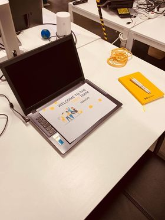

Een week meekijken bij Theo Technologies
Een week meekijken bij Theo TechnologiesIk ben Manon een leerlinge uit het Immaculata instituut Oostmalle. Momenteel zit ik in het zesde jaar Ondernemen en IT. Voor mijn geïntegreerde proef heb ik een observatie stage gedaan bij Theo Technologies.
